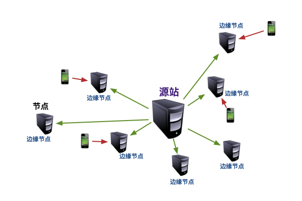
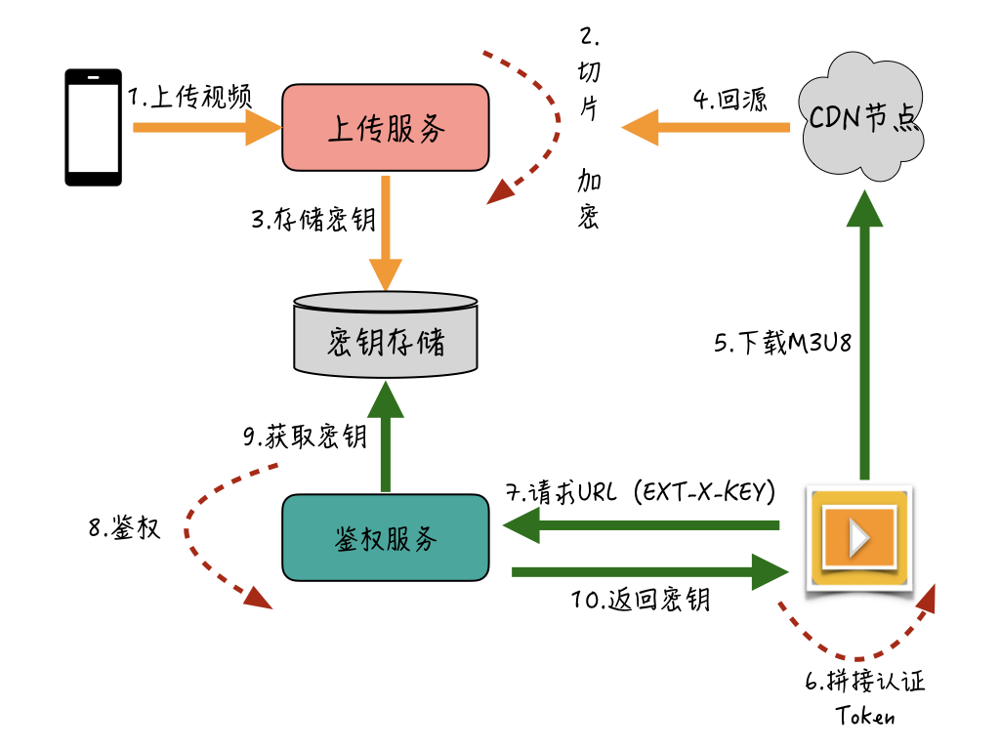

- 00 开篇词 搞懂“实时交互”的IM技术，将会有什么新机遇？.md.html
- 01 架构与特性：一个完整的IM系统是怎样的？.md.html
- 02 消息收发架构：为你的App，加上实时通信功能.md.html
- 03 轮询与长连接：如何解决消息的实时到达问题？.md.html
- 04 ACK机制：如何保证消息的可靠投递？.md.html
- 05 消息序号生成器：如何保证你的消息不会乱序？.md.html
- 06 HttpDNS和TLS：你的消息聊天真的安全吗？.md.html
- 07 分布式锁和原子性：你看到的未读消息提醒是真的吗？.md.html
- 08 智能心跳机制：解决网络的不确定性.md.html
- 09 分布式一致性：让你的消息支持多终端漫游.md.html
- 10 自动智能扩缩容：直播互动场景中峰值流量的应对.md.html
- 11 期中实战：动手写一个简易版的IM系统.md.html
- 12 服务高可用：保证核心链路稳定性的流控和熔断机制.md.html
- 13 HTTP Tunnel：复杂网络下消息通道高可用设计的思考.md.html
- 14 分片上传：如何让你的图片、音视频消息发送得更快？.md.html
- 15 CDN加速：如何让你的图片、视频、语音消息浏览播放不卡？.md.html
- 16 APNs：聊一聊第三方系统级消息通道的事.md.html
- 17 Cache：多级缓存架构在消息系统中的应用.md.html
- 18 Docker容器化：说一说IM系统中模块水平扩展的实现.md.html
- 19 端到端Trace：消息收发链路的监控体系搭建.md.html
- 20 存储和并发：万人群聊系统设计中的几个难点.md.html
- 21 期末实战：为你的简约版IM系统，加上功能.md.html
- 22 答疑解惑：不同即时消息场景下架构实现上的异同.md.html
- 结束语 真正的高贵，不是优于别人，而是优于过去的自己.md.html
- 捐赠
15 CDN加速：如何让你的图片、视频、语音消息浏览播放不卡？
你好，我是袁武林。
上一讲，我从即时消息场景中多媒体消息的上传环节出发，介绍了业界常用的几种提升用户上传体验的优化手段。
那么这节课，我会从播放的角度出发，带你了解在浏览和播放图片、视频、语音等多媒体消息时，如何避免灰图和卡顿的问题，以及在节省流量方面，业界都有哪些比较常见的优化策略。
CDN加速
提升用户浏览图片和播放视频体验的一个有效办法就是：让用户离资源更近。
比如说，北京的用户可以从北京的机房下载图片，而广东的用户可以从广东的节点机房来下载图片，这样让用户和资源实现物理位置上的相邻，以此降低远程访问的耗时，提升下载性能。
业界常用的一种手段，就是通过CDN（Content Delivery Network，内容分发网络）对图片和音视频进行加速，来提升用户播放体验。
所谓的CDN加速技术，就是将客户端上传的图片、音视频发布到多个分布在各地的CDN节点的服务器上，当有用户需要访问这些图片和音视频时，能够通过DNS负载均衡技术，根据用户来源就近访问CDN节点中缓存的图片和音视频消息，如果CDN节点中没有需要的资源，会先从源站同步到当前节点上，再返回给用户。
CDN下载时的访问链路你可以参考下图：- 
通过这种资源冗余的方式，既能显著提高用户访问的响应速度，也能有效缓解服务器访问量过大带来的对源存储服务的读写压力和带宽压力。
CDN作为一种非常成熟而且效果明显的资源访问加速技术，在用户访问量较大的多媒体业务中被广泛使用，直播、短视频、图片等业务都是CDN的重度使用对象。
CDN预热
大部分CDN加速策略采用的是“拉模式”，也就是当用户就近访问的CDN节点没有缓存请求的数据时，会直接从文件上传存储的源站下载数据，并更新到这个CDN节点的缓存中。
但在即时消息的一些特殊场景中，比如对超高热度的大型聊天室来说，如果采用“拉模式”，可能会导致CDN缓存命中率低，高并发的请求都被回源到源站，源站的带宽和存储压力都会比较大。
这种情况下，我们可以采用“预热”的方式，来提前强制CDN节点回源并获取最新文件。大部分CDN都支持这个功能，通过CDN服务提供的API接口，把需要预热的资源地址和需要预热的区域等信息提交上去，CDN收到后，就会触发这些区域的边缘节点进行回源来实现预热。此外，利用CDN预热功能，还可以在业务高峰期预热热门的视频和图片等资源，提高资源的访问效率。
使用CDN如何保障消息私密性？
由于大部分CDN对外都是提供公开的资源访问，面对即时消息的一些较为私密的场景，其资源的访问权限很难做到精细化控制。比如，点对点聊天的一些视频和图片，我们希望仅收发双方有权限看到，或者某个群里的图片、视频，我们希望只有这个群里的用户才能看，其他用户即使有下载地址也看不了。
由于这种权限判断的业务逻辑性特别强，涉及到需求各异的逻辑判断，因此大部分CDN是很难实现这种精细化控制的。
因此，我们可以先考虑一下：对于私密性要求极高的场景，是否有上CDN的必要性。
比如，点对点聊天的图片和视频消息，只是接收方一人需要查看，那么根本没有上CDN的必要，不然不仅浪费CDN资源，而且多级回源造成的延迟开销可能还会降低用户体验。
而对于用户量较大的超级大群、直播间、聊天室等场景来说，如果通过CDN确实能提升用户浏览图片和播放视频的流畅度，我们可以选择通过“流加密”的方式来提供私密性的保障。
比如，在视频消息中，如果针对视频文件使用HLS协议来进行分片，那么就可以采用HLS协议自带的加解密功能，来实现视频的流加密。
HLS（流媒体网络传输协议）是苹果公司主导的为提高视频流播放效率而开发的技术。它的工作原理就是把整个媒体流分成一个个小的、基于HTTP的文件来下载，每次只下载一部分文件，从而达到实现消息加速分发的目的。
HLS实现上由一个包含元数据的M3U8文件和众多被切割的视频片段的TS文件组成。其中，M3U8文件作为TS的索引文件，用于寻找可用的媒体流，可以针对这些视频片段的TS文件进行AES（Advanced Encryption Standard）等对称加密，从而保证第三方用户即使获取到TS的媒体文件，也播放不了。
M3U8的索引文件中，支持“针对每一个TS文件可设置相应的获取密钥的地址”，这个地址可以作为业务层的鉴权接口，获取密钥时通过自动携带的Cookie等信息进行权限判定。只有鉴权通过，才会返回正确的密钥，而且整个解密过程都是播放器默认自动支持的，也不需要人为地对播放器进行改造。
通过HLS实现视频加解密的大概流程如下图：- 
用户通过上传服务，把视频上传到服务端；服务端进行视频的HLS切片并针对切完的TS文件流进行加密，同时把密钥存储到密钥服务中。当有用户请求该视频时，CDN节点从源站回源加密的视频文件，播放器先通过下载的M3U8索引文件获取到“密钥地址”，然后将客户端缓存的认证Token拼接到该“密钥地址”后面，再通过该地址请求鉴权服务。
鉴权服务先检查携带的认证Token是否有权限访问该视频文件，如果权限没问题，会从密钥存储服务中将该视频的密钥文件返回给播放器，这时播放器就能自动解密播放了。
不过，虽然HLS原生支持加解密操作，但是对于图片等其他多媒体消息来说，没有办法使用这种方式。而且在有的即时消息系统中，只支持MP4格式的视频文件。所以，针对非HLS视频，我们还可以通过播放器的改造，来支持自定义的加密方式。
比如，通过RC4（Rivest Cipher 4，一种流加密算法）加密MP4格式的视频文件，然后从业务接口获取消息地址时下发密钥，这样改造后的播放器也可以达到“边解密边播放”的效果。这种方式唯一的成本是，需要定制化的播放器才能播放，开发成本也相对略高，这里先不展开了，如果你有兴趣，可以在留言区和我讨论交流。
边下边播和拖动播放
IM场景中的视频消息，在产品策略上都会有时长或大小的限制，一般来说都是控制在几分钟以内或者百兆以内的短视频。不过即使是短视频，如果用户在播放时需要等到视频全部下载完，等待时间也是10s以上了，这样用户的播放体验就不太好。
一种常见的优化方案是采用边下边播策略。在播放器下载完视频的格式信息、关键帧等信息后，播放器其实就可以开始进入播放，同时结合HTTP协议自带支持的Range头按需分片获取后续的视频流，从而来实现边下边播和拖动快进。
支持边下边播需要有两个前提条件。
- 格式信息和关键帧信息在文件流的头部。如果这些信息在文件尾部，就没法做到边下边播了。对于格式信息和关键帧信息不在头部的视频，可以在转码完成时改成写入到头部位置。
- 服务端支持Range分片获取。有两种支持方式。- a.一种是文件的存储服务本身支持按Range获取，比如阿里的对象存储服务OSS和腾讯的对象存储服务COS，都支持分片获取，能够利用存储本身的分片获取机制真正做到“按需下载”。- b.对于不支持分片获取的存储服务来说，还可以利用负载均衡层对Range的支持来进行优化。比如，Nginx的HTTP Slice模块就支持在接收到Range请求后从后端获取整个文件，然后暂存到Nginx本地的Cache中，这样取下一片时能够直接从Nginx的Cache中获取，不需要再次向后端请求。这种方式虽然仍存在首次获取速度慢和Cache命中率的问题，但也可以作为分片下载的一种优化策略。
图片压缩和视频转码
另一种优化下载性能的策略是对图片、视频进行压缩和转码，在保证清晰度的情况下尽量降低文件的大小，从而提升下载的性能和降低网络开销。
图片压缩一般又分为客户端压缩和服务端压缩。客户端压缩的目的主要是减小上传文件的大小，提升上传成功率，降低上传时间，这里我们就不再详细展开了。下面我们主要了解一下服务端压缩的一些比较有效的方式。
分辨率自适应
针对图片下载性能的优化，一个比较重要的优化点是“分辨率自适应”。
比如，在消息会话里的图片，我们可以使用低分辨率的缩略图来显示，等用户点击缩略图后再去加载大图，因为低分辨率的缩略图一般都只有几十KB，这样加载起来也比较快。一般服务端会提前压缩几种常见的低分辨率的缩略图，然后按照终端机器的分辨率来按需下载。
WebP和渐进式JPEG
除了“分辨率自适应”的优化方式以外，WebP格式也是一种有效的图片下载性能优化手段。
WebP是Google推出的一种支持有损压缩和无损压缩的图片文件格式，在保持相同质量的前提下，WebP格式的图片比同样的PNG或JPEG图片要小30%左右，因此目前已经被互联网界广泛使用。比如，有报道称YouTube的视频略缩图采用 WebP格式后，网页加载速度提升了10%；谷歌的Chrome网上应用商店采用WebP格式图片后，每天可以节省几TB的带宽。
但WebP在iOS系统上的支持性不太好，需要内置WebP解析库，因此在实现上需要一定的开发成本。
另一个图片格式的优化手段是“渐进式JPEG”。
JPEG分两种，一种是基线JPEG，是最常见的JPEG图格式，采用简单的自上而下的方式进行编码和解码，一般都是图片从上而下逐行加载；另一种是渐进式JPEG，将图像划分为多个扫描区域，第一次扫描以模糊或低质量设置显示图像，后续扫描再逐步提高图像质量，因此我们会看到有一个从模糊到清晰的过程。
采用渐进式JPEG压缩的图片，能够在加载图像时提供低分辨率的“预览”，加载体验更好；还有一个好处是，渐进式JPEG在图片大小超过10KB时，相对基线JPEG压缩比更高。在2015年，Facebook改用了渐进式JPEG后（用于iOS应用程序），节省了10%的数据流量，图像加载性能快了15%。
但这里需要你注意的是：渐进式JPEG编码比传统基线JPEG的编码速度慢了60%，所以还需要权衡性能和成本的平衡。
针对图片下载性能的优化方式还有很多，比如Google在2017年最新推出的图片压缩格式Guetzli；还有各家自研的图片格式，如腾讯自研的TPG等。如果你有兴趣的话可以自行了解一下。
H.265转码
下面我们来看一下，针对视频消息的下载性能优化，都有哪些优化手段。
视频的码率是数据传输时单位时间传送的数据BPS。同一种编码格式下，码率越高，视频越清晰；反之码率太低，视频清晰度不够，用户体验会下降。但码率太高，带宽成本和下载流量也相应会增加。
目前，主流的视频格式采用H.264编码，H.265（又名HEVC）是2013年新制定的视频编码标准。同样的画质和同样的码率，H.265比H.264占用的存储空间要少50%，因此在实现时，我们可以通过H.265来进行编码，从而能在保证同样画质的前提下降低码率，最终达到降低带宽成本和省流量的目的。
但H.265的编码复杂度远高于H.264（10倍左右），因此服务端转码的耗时和机器成本也相应会高很多。很多公司也并不会全部都采用H.265编码，而是只选取部分热点视频来进行H.265编码，通过这种方式，在降低转码开销的同时来尽量提升H.265视频的覆盖度。
预加载
即时消息场景中，短视频播放的一个重要的用户体验指标是：一秒内成功开播率，也就是我们常说的“秒开”。但每个视频从点击，再到下载完元数据信息和部分可播放片段的过程中，网络IO耗时是比较高的，在不经过优化的情况下经常就需要秒级以上。
对此，一个比较通用的优化策略是：对视频流进行“部分提前加载”。
比如WiFi场景下，在用户打开聊天会话页时，自动触发当前页中的小视频进行预加载，为了平衡流量和播放体验，一般只需要预加载部分片段，后续如果用户继续观看，就可以通过边下边播的方式再去请求后面的视频流。
预加载可以按时间或者大小来限制。比如，我们可以设定预加载3s的视频流，或者设定预加载512KB的视频流。
推流
针对图片和音视频的浏览、播放的体验优化，我们还可以借助即时消息自身的“长连接”优势，通过长连接将部分带宽占用较小的资源推给接收方，这样用户在浏览或播放多媒体消息时，就不会因为需要临时从服务端获取而出现卡顿了。
比如，之前提到语音消息会通过长连接将音频流推送给接收方。同样，对于图片的缩略图和视频的封面图也可以通过长连接实时将资源推送下去，从而减少了加载耗时，提升了用户体验。
但这里，我建议用于消息收发的通道尽量只传输小的音频或者缩略图，避免影响通道造成堵塞。如果你的业务场景中需要直接推送视频流或者原图的，可以通过长连通知客户端重新发起一个新的临时连接，来进行流的传输。
小结
这节课，我主要从提升用户图片浏览及音视频播放体验的角度出发，介绍了一些在即时消息场景中，业界比较通用的优化策略。其中，有很多是业界通用的优化方案，还有一些是与即时消息联系比较紧密的优化点。从这里你也可以看出，即时消息并不是一个独立存在的领域，而是多个领域的技术的大融合。
最后，我们再一起回顾下上面提到的针对多媒体消息的下行都有哪些技能树：
- 通过CDN加速，让“用户离资源更近”；
- 通过“流加密”来解决CDN上多媒体消息的私密性问题；
- 为图片提供多种中低分辨率的缩略图来提升图片预览性能；
- 使用WebP和渐进式JPEG来对图片进行压缩，以降低体积，提升加载性能；
- 针对热门的小视频采用H.265转码，在保证画质的同时，降低带宽成本并加快视频加载；
- 通过视频的自动“预加载”功能，达到视频播放“秒开”的效果；
- 借助长连接通道，对体积较小的音频和缩略图进行实时推送，提升用户浏览和播放体验。
由于图片和音视频技术的发展十分迅猛，各种新的优化技术层出不穷，而且针对多媒体消息上传和下载的优化，很多还涉及到深层次的音视频编解码和图片压缩算法的实现，大部分大厂针对这一块也有专门的团队来进行研究。如果你对即时消息场景中多媒体消息的上传和下载的优化有其他思路和想法，也欢迎在留言区给我留言。
最后给你留一道思考题：针对CDN上的文件访问鉴权，你还了解其他可行的方案吗？
以上就是今天课程的内容，欢迎你给我留言，我们可以在留言区一起讨论。感谢你的收听，我们下期再见。
© 2019 - 2023 Liangliang Lee. Powered by gin and hexo-theme-book.